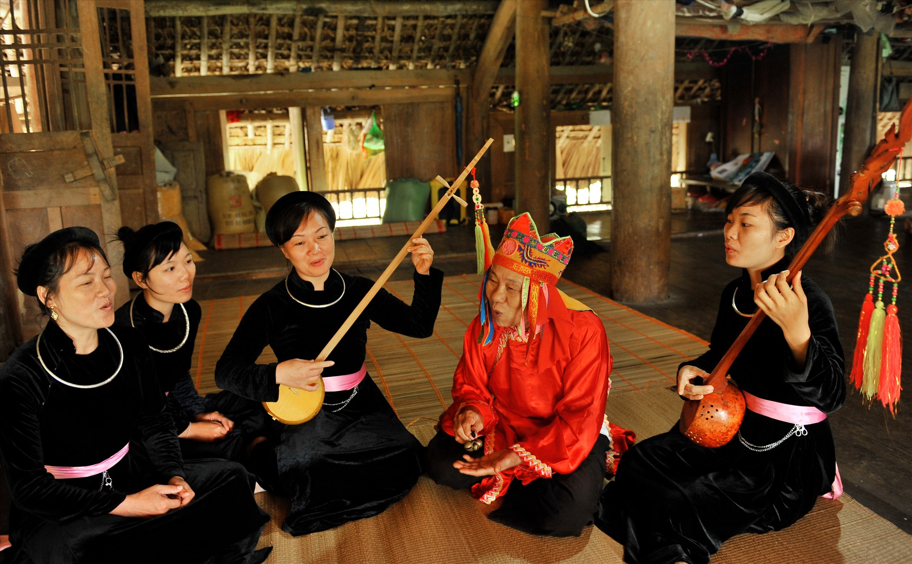
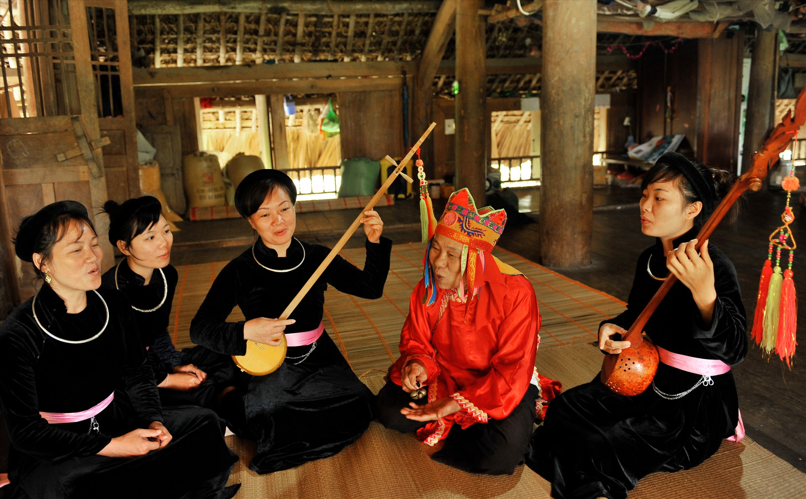

Now, rearrange the letters into a word
If you arranged "Then", it's correct!
Musical instruments in Then dance of the Tay ethnic group
 

So Chieng, Thanh La, Oi flute and most importantly, Tinh flute are the instruments used to perform Then dance or singing, alongisde with drums.

Then singing and Tinh lute originated from the working life of the ancient Tay people. According to folk beliefs, Then means Heaven, Heaven means “sky”, and is considered a song passed down from the gods. Therefore, in the life of the ancient Tay people, it is used in important events or ceremonies to pray for peace, crops, and to call the soul… The Tay people believe that Then melodies help send prayers to heaven. The practice of Then of the Tay, Nung, and Thai people in Vietnam was recognized by the United Nations Educational, Scientific and Cultural Organization (UNESCO) as an Intangible Cultural Heritage of Humanity in December 2019, demonstrating the great values of this heritage while affirming the cultural identity of Vietnam, contributing to enriching the common cultural treasure of humanity. - Then lyrics are words that have been carefully selected and refined by the people; they are both lyrical and melodious poems, as well as advice and encouragement; and experiences in dealing with people... Therefore, listening to the Tinh lute and Then lyrics, people can see their own lives in them. Cao Bang Then singing also has a prominent feature of community, singing during festivals, weddings, cultural activities, and both men and women know how to sing. Therefore, Then singing has become an indispensable need in the life of the Tay people in Cao Bang.